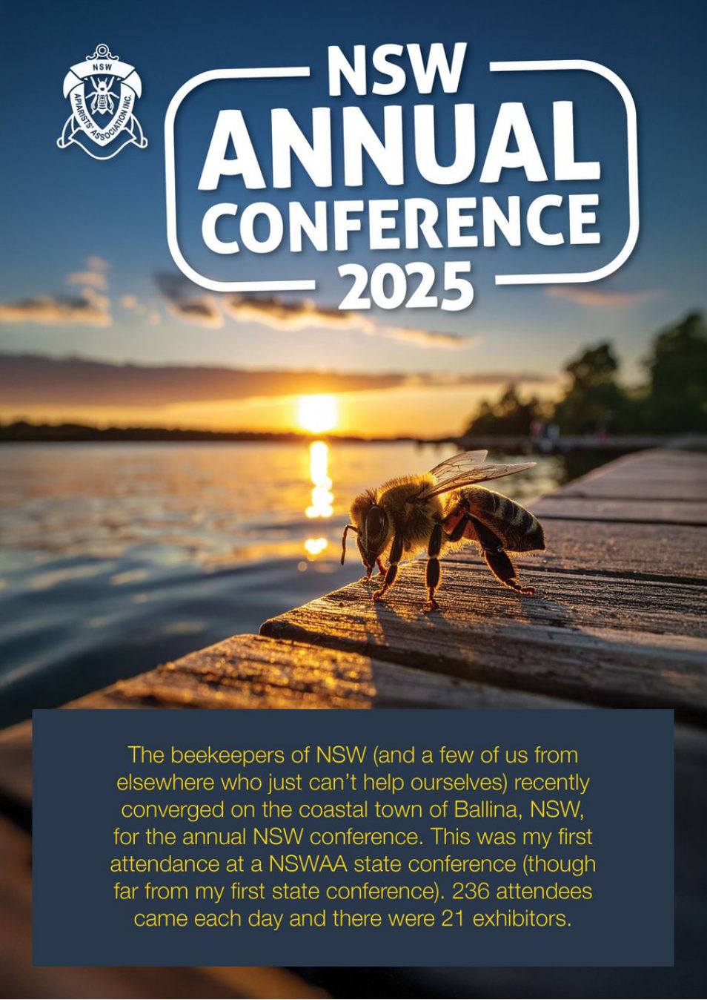

ANNUAL I
The beekeepers of NSW (and a few of us from
elsewhere who just can’t helo ourselves) recently
converged on the coastal town of Ballina, NSW,
for the annual NSW conference. This was my first
attendance at
a NSWAA state conference (though
far from my first state conference). 236 attendees
came each day and there were 21 exhibitors.